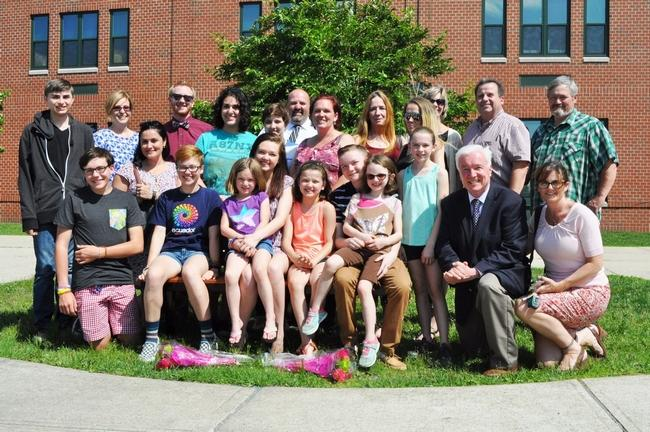
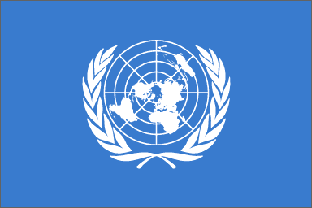

leadership
This activity will be a simulation where students have the opportunity to debate, present and strategize. The project will end with students taking a global issue central to their chosen nation and presenting a new solution to resolve this issue. Critical thinking, communication, and research that stems globally are important components of this project. Click here for a Medford Transcript Article about this project
Students will learn the fundamentals of entrepreneurship and research case studies of successful entrepreneurs. The club participants will access websites, cable/TV programs, local business people and guest speakers to create a business plan. Students will compete for achievement awards for their projects.
This activity will be a simulation where students have the opportunity to debate, present and strategize. The project will end with students taking a global issue central to their chosen nation and presenting a new solution to resolve this issue. Critical thinking, communication, and research that stems globally are important components of this project.
